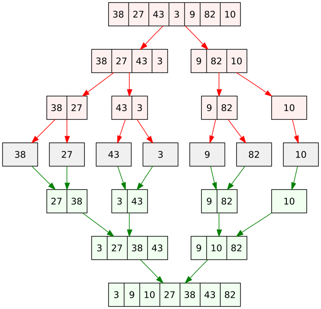

Ken Levasseur, Al Doerr, Michiel Smid, Oscar Levin, Charles M. Grinstead, J. Laurie Snell, Eric Lehman, F. Thomson Leighton, Albert R Meyer, Jeff Erickson, Kenneth P. Bogart, Carol Chritchlow, David Eck, OpenDSA Project, L.J. Miller
In order to understand recursion, you must first understand recursion.
Recursion is the concept where an object (such as a function, a set, or an algorithm) is defined in the following way:
There are one or more base cases.
There are one or more rules that define an object in terms of “smaller” objects that have already been defined.
We have already seen recursive functions and set definitions in Section 8.4. In this section we will see several examples of recursive algorithms.
The previous section starts with an algorithm for singing 99 Bottles of Beer on the Wall. We can redefine that as a recursive algorithm:
Algorithm9.2.1.RecursiveBottlesOfBeer.
procedure RecursiveBottlesOfBeer.
(\(n\text{:}\) number of bottles)
If n = 0:
Sing: “No bottles of beer on the wall, no bottles of beer,”
Sing: “Go to the store, buy some more, n bottles of beer on the wall.”
Else:
Sing: “n bottles of beer on the wall, n bottles of beer,”
Sing: “Take one down, pass it around, n − 1 bottles of beer on the wall.”
RecursiveBottlesOfBeer (n-1)
This has all the hallmarks of a recursive algorithm, the loop in Algorithm 9.1.1 the non-recursive version is gone and replaced with a recursive case: the call to RecursiveBottlesOfBeer with a smaller input (n - 1). The base case is where no bottles of beer are left, n = 0, a different verse is sung and there is no recursive call, the recursion stops.
Subsection9.2.1Euclid’s Algorithm
We might call Euclid’s method the granddaddy of all algorithms, because it is the oldest nontrivial algorithm that has survived to the present day
―Donald E. Knuth, The Art of Computer Programming, Vol. 2, 1997
.
The greatest common divisor of two integers \(a \geq 1\) and \(b \geq 1\) is the largest integer that divides both \(a\) and \(b\text{.}\) We denote this largest integer by \(GCD(a,b)\text{.}\) For example, the common divisors of \(75\) and \(45\) are \(1\text{,}\)\(3\text{,}\)\(5\text{,}\) and \(15\text{.}\) Since \(15\) is the largest among them, \(GCD(75,45) = 15\text{.}\) Observe that, for any integer \(a \geq 1\text{,}\)\(GCD(a,a) = a\text{.}\)
Assume we are given two large integers \(a\) and \(b\text{,}\) say \(a = 371, 435, 805\) and \(b = 137, 916, 675\text{.}\) How can we compute their greatest common divisor? One approach is to determine the prime factorizations of \(a\) and \(b\text{:}\)
Unfortunately, an efficient algorithm is not known for obtaining the prime factorization of a very large integer. As a result, this approach to compute the greatest common divisor of two large integers is not good.
Around 300 BC, Euclid published an algorithm that is both very simple and efficient. This algorithm is based on the modulo or mod operation, which we introduce first.
Subsubsection9.2.1.1The Modulo Operation
Let \(a \geq 1\) and \(b \geq 1\) be integers. If we divide \(a\) by \(b\text{,}\) then we obtain a quotient\(q\) and a remainder\(r\text{,}\) which are the unique integers that satisfy
\begin{equation*}
a = qb + r\\
q \geq 0, \mbox{ and } 0 \leq r \leq b-1 .
\end{equation*}
The modulo operation, denoted by \(a \bmod b\text{,}\) is the function that maps the pair \((a,b)\) to the remainder \(r\text{.}\) Thus, we will write
Euclid’s algorithm takes as input two positive integers \(a\) and \(b\text{,}\) where \(a \geq b\text{,}\) and returns \(GCD(a,b)\text{.}\)
The algorithm starts by computing \(a \bmod b\) and stores the result in a variable~\(r\text{.}\) If \(r=0\text{,}\) then the algorithm returns the value \(b\text{.}\) Otherwise, we have \(r \geq 1\text{,}\) in which case the algorithm recursively computes the greatest common divisor of \(b\) and \(r\text{.}\) The algorithm is presented in pseudocode below.
Algorithm9.2.2.Euclid’s GCD Algorithm.
procedure Euclid.
(\(a, b\text{:}\) integers with \(a \geq b \geq 1\))
\(r = a \bmod b\text{;}\)
if\(r = 0\text{:}\)
return:\(b\)
else:
Euclid\((b,r)\)
Let us look at an example. If we run Euclid(75,45), then the algorithm computes \(75 \bmod 45\text{,}\) which is \(30\text{.}\) Then, it runs Euclid(45,30), during which the algorithm computes \(45 \bmod 30\text{,}\) which is \(15\text{.}\) Next, it runs Euclid(30,15), during which the algorithm computes \(30 \bmod 15\text{,}\) which is \(0\text{.}\) At this moment, the algorithm returns \(15\text{,}\) which is indeed the greatest common divisor of the input values \(75\) and \(45\text{.}\)
In the following implementation of Euclid’s Algorithm in SageMath, we repeat the process of finding Euclid(75,45).
Subsection9.2.2Recursive Searching
Most algorithms with tasks that are repeated in a loop can be defined recursively. Recursive algorithms have the advantage of less complex definitions leading to shorter computer programs, however as we will see in Section 9.3 this sometimes comes with poor execution efficiency leading to drastically slower running times.
Recursive Linear Search.
We can make our Linear Search algorithm from Algorithm 9.1.10 recursive by replacing the while loop with a recursive call. We must add an input to keep track of the location to look at in the list. There are two base cases: the “not found” case where the entire list has been searched; and the “found” case where the target is found at the current location. Both base cases return a value, either the location of the found target or 0 to indicate it is not in the list. The recursive case returns the result of a recursive call with the location moved forward by one.
Algorithm9.2.3.Recursive Linear Search.
procedure recursive_linear_search:.
(\(x\text{:}\) target; \(\{a_1, a_2, ..., a_n\}\text{:}\) list of items; \(loc\text{:}\) location, starts at 1)
In the following implementation of the Recursive Linear Search in SageMath, we search within the same randomly generated list of integers as Linear Search in the previous section. Printouts have been added to show the pattern of recursive calls.
Recursive Maximum Element.
Similarly to Linear Search, the Maximum Element algorithm can be made recursive. In this task the algorithm must examine every element in the list, so there is only one base case: when the end of the list is reached. An input must be added to keep track of the maximum element between recursive calls. The recursive case is almost identical to Linear Search, it just moves the process to the next list element.
Algorithm9.2.4.Recursive Maximum Element.
procedure RecursiveMaximumElement:.
(\(\{a_1, a_2, ..., a_n\}\text{:}\) list of items; \(loc\text{:}\) location, starts at 1; \(max\text{:}\) largest element seen)
In the following implementation of Recursive Maximum Element in SageMath, we find the maximum of a randomly generated list of integers.
Recursive Binary Search.
Unlike the two algorithms above, Binary Search is more commonly implemented as a recursive algorithm. The recursive version we present here is the most common definition.
There are two base cases. The first base case is when all possible elements have been compared and the target is not found. This occurs when the begin position is greater than the end position, no elements are left to examine so -1 is returned. The second base case is when the target is found, the middle element is equal to the target and the location of that middle element is returned. There are also two recursive cases, one for if the target is larger than the middle element and one for if the target is smaller than the middle element. If the target is larger than the middle, the recursive call will look at the upper half of the remaining list, if the target is smaller than the middle element, the other recursive call looks at the lower half of the remaining list.
Algorithm9.2.5.Recursive Binary Search.
procedure BinarySearch.
(\(x\text{:}\) target; \(\{a_1, a_2, ..., a_n\}\text{:}\) sorted list of items; begin: pos; end: pos)
In the following implementation of the Binary Search in SageMath, we search within a sorted list of integers. Extra printouts of the list being considered at each step have been added.
Note9.2.6.
The end position is the length of the list - 1 because of 0 indexing.
Subsection9.2.3Recursive Sorting
The sorting algorithms in the previous section are not usually implemented recursively so we will not present recursive versions here. However, there are many recursive sorting algorithms that are considered more efficient than those we have already seen. One recursive sorting algorithm is Merge Sort.
Merge Sort.
Merge Sort is a recursive sorting algorithm that works as follows. To sort the sequence of \(n\) numbers \(a_1,a_2,\ldots,a_n\text{,}\)
it recursively sorts the first half of the sequence \(a_1,a_2,\ldots,a_m\text{,}\) where \(m = \lfloor n/2 \rfloor\text{,}\) and stores the sorted sequence in a list \(L_1\text{,}\)
it recursively sorts the second half of the sequence \(a_{m+1},a_{m+2},\ldots,a_n\) and stores the sorted sequence in a list \(L_2\text{,}\)
it merges the two sorted lists \(L_1\) and \(L_2\) into one sorted list.
The MergeSort process is visualized in the image below:

Figure9.2.7.Merge Sort Diagram. VineetKumar at English Wikipedia [Public domain], via Wikimedia Commons 1
Below, you see this recursive algorithm in pseudocode.
Algorithm9.2.8.Merge Sort.
procedure MergeSort.
(\(\{a_1, a_2, ..., a_n\}\text{:}\) list of items; \(n\text{:}\) length of list)
if\(n \geq 2\text{:}\)
\(m = \lfloor n/2 \rfloor\)
\(L_1 = \) list consisting of the first \(m\) elements of \(L\)
\(L_2 = \) list consisting of the last \(n-m\) elements of \(L\)
\(L_1 = MergeSort(L_1,m)\)
\(L_2 = MergeSort(L_2,n-m)\)
\(L = Merge(L_1,L_2)\)
return\(L\)
We still have to specify the non-recursive algorithm \(Merge(L_1,L_2)\text{.}\) Of course, this algorithm uses the fact that both \(L_1\) and \(L_2\) are sorted lists. The task is to merge two sorted lists into one sorted list.
This is done in the following way. Initialize an empty list \(L\text{.}\) (At the end, this list will contain the final sorted sequence.)
Let \(x\) be the first element of \(L_1\) and let \(y\) be the first element of \(L_2\text{.}\)
If \(x \leq y\text{,}\) then remove \(x\) from \(L_1\) and append it to \(L\) (i.e., add \(x\) at the end of \(L\)).
Otherwise (i.e., if \(x > y\)), remove \(y\) from \(L_2\) and append it to \(L\)
Repeat these steps until one of \(L_1\) and \(L_2\) is empty. If \(L_1\) is empty, then append \(L_2\) to \(L\text{.}\) Otherwise, append \(L_1\) to \(L\text{.}\) Here is the algorithm in pseudocode:
Algorithm9.2.9.Merge.
procedure Merge.
(\(L_1\text{:}\) sorted list of items; \(L_2\text{:}\) sorted list of items)
\(L = \) empty list
while\(L_1\) not empty and \(L_2\) not empty:
\(x=\) first element of \(L_1\text{;}\)
\(y=\) first element of \(L_2\text{;}\)
if\(x \leq y\text{:}\)
remove \(x\) from \(L_1\text{;}\)
append \(x\) to \(L\)
else:
remove \(y\) from \(L_2\text{;}\)
append \(y\) to \(L\)
if\(L_1\) is empty:
append \(L_2\) to \(L\)
else
append \(L_1\) to \(L\)
return\(L\)
Correctness of Algorithm MergeSort.
I hope you are convinced that the output \(L\) of algorithm \(Merge(L_1,L_2)\) is a sorted list that contains all elements of \(L_1\) and \(L_2\) (and no other elements). How do we prove that algorithm \(MergeSort(L,n)\) is correct, i.e., correctly sorts the elements in any list \(L\) of \(n\) numbers? Since the algorithm is recursive, we prove this by induction.
The two base cases are when \(n=0\) or \(n=1\text{.}\) It follows from the pseudocode for \(MergeSort(L,n)\) that it simply returns the input list \(L\text{,}\) which is obviously sorted.
Let \(n \geq 2\) and assume that for any integer \(k\) with \(0 \leq k < n\) and for any list \(L'\) of \(k\) numbers, algorithm \(MergeSort(L',k)\) returns a list containing the elements of \(L'\) in sorted order. Let \(L\) be a list of \(n\) numbers. By going through the pseudocode for \(MergeSort(L,n)\text{,}\) we observe the following:
The recursive call \(MergeSort(L_1,m)\) is on a list with less than \(n\) numbers. Therefore, by the induction hypothesis, its output, which is the list \(L_1\text{,}\) is sorted.
The recursive call \(MergeSort(L_2,n-m)\) is on a list with less than \(n\) numbers. Again by the induction hypothesis, its output, which is the list \(L_2\text{,}\) is sorted.
Algorithm \(Merge(L_1,L_2,)\) gets as input the two sorted lists \(L_1\) and \(L_2\text{,}\) and returns a list \(L\text{.}\) Since algorithm \(Merge\) is correct, it then follows that \(L\) is a sorted list.
It follows that the final list \(L\text{,}\) which is returned by algorithm \(MergeSort\text{,}\) is sorted.
This proves the correctness of algorithm \(MergeSort(L,n)\) for any integer \(n \geq 0\) and any list \(L\) of \(n\) numbers.
Exercises9.2.4Exercises for Section 9.2
1.
Consider a recursive algorithm for computing the factorial function (\(n!\))
Algorithm9.2.10.Recursive Factorial.
procedure RecursiveFactorial.
(\(n\text{:}\) non-negative integer)
if\(n = 0\text{:}\)
return 1
else:
return n * RecursiveFactorial\((n-1)\)
Make a trace of the recursive calls for RecursiveFactorial(3)
For RecursiveFactorial(3), how many times will the base case be executed?
Write in pseudocode a recursive algorithm that finds the sum of all of the first \(n\) positive integers.
5.
Write a complete trace of binary search for 6 on the list [1, 2, 3, 4, 5, 6, 7 , 8 , 9] showing the lists obtained and the values of begin, end, and mid at each step.
Write a complete trace of merge sort on the list [6, 2, 3, 1, 5, 4] showing the lists obtained at each step. Make sure to show the order in which the splits and merges occur (not like Figure 9.2.7).